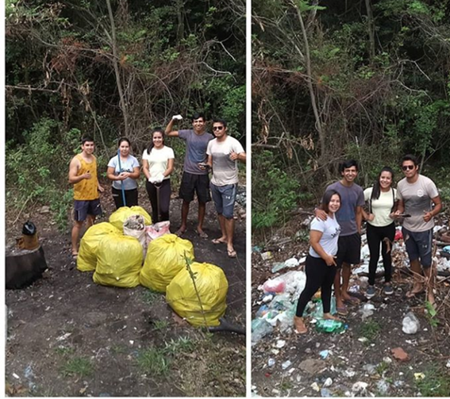

¿por que es que se piensa esto?
Aunque muchos no lo crean nosotros los seres humanos somos seres egoistas que destruyaen todo y solo se interesa por su beneficio propio sin tener en cuenta a otros seres vivos tales como los animales, plantas, etc.
como es que causamos esto? pues sencillo con la produccion de gases contaminantes por medio de vehiculos, la tala de arboles, entre muchas mas problematicas originadas por la accion del ser humano.

Podemos reparar todos nuestros daños por medio de un cuidado al medio ambiente pero... se necesita la ayuda de todos, no solo de uno para salvar el medio ambiente.
